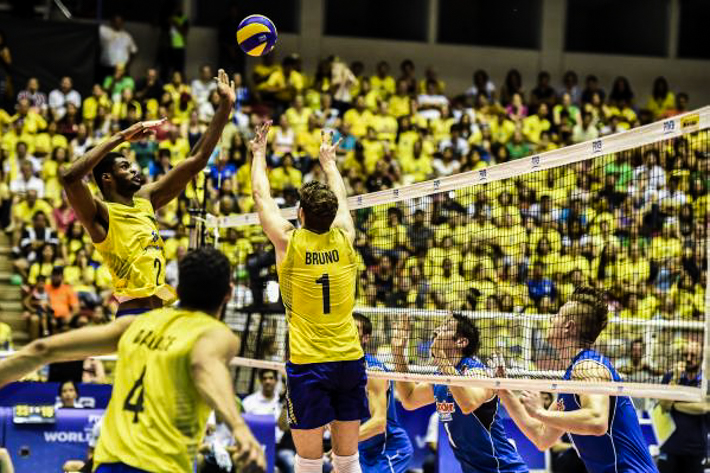

O ataque é uma ação realizada próximo à rede e consiste em acertar a bola a fim de marcar um ponto. Geralmente é o terceiro contato de uma equipe com a bola. O ataque realizado pelo levantador recebe o nome de bola de segunda. O ataque realizado no primeiro toque de um time após um erro de recepção do time adversário é chamado bola de xeque. Nem todas as ações que enviam a bola para a quadra adversária são consideradas de ataque. O saque e o bloqueio não são consideradas ações de ataque. O atacante pode acertar a bola com força, realizando, assim, uma cortada, ou explorar um espaço vazio na quadra adversária, sem utilizar força, realizando uma largada ou pingada. Os ataques podem ser realizados por qualquer jogador de um time, exceto pelo jogador líbero. Logo a seguir veremos como executar o ataque.
Voltar à Página Inicial e ver outros Fundamentos